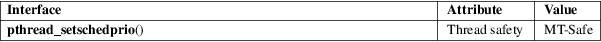

pthread_setschedprio − set scheduling priority of a thread
POSIX threads library (libpthread, −lpthread)
#include <pthread.h>
int pthread_setschedprio(pthread_t thread, int prio);
The pthread_setschedprio() function sets the scheduling priority of the thread thread to the value specified in prio. (By contrast pthread_setschedparam(3) changes both the scheduling policy and priority of a thread.)
On success, this function returns 0; on error, it returns a nonzero error number. If pthread_setschedprio() fails, the scheduling priority of thread is not changed.
|
EINVAL |
prio is not valid for the scheduling policy of the specified thread. | ||
|
EPERM |
The caller does not have appropriate privileges to set the specified priority. | ||
|
ESRCH |
No thread with the ID thread could be found. |
POSIX.1 also documents an ENOTSUP ("attempt was made to set the priority to an unsupported value") error for pthread_setschedparam(3).
For an explanation of the terms used in this section, see attributes(7).

POSIX.1-2008.
glibc 2.3.4. POSIX.1-2001.
For a description of the permissions required to, and the effect of, changing a thread’s scheduling priority, and details of the permitted ranges for priorities in each scheduling policy, see sched(7).
getrlimit(2), sched_get_priority_min(2), pthread_attr_init(3), pthread_attr_setinheritsched(3), pthread_attr_setschedparam(3), pthread_attr_setschedpolicy(3), pthread_create(3), pthread_self(3), pthread_setschedparam(3), pthreads(7), sched(7)